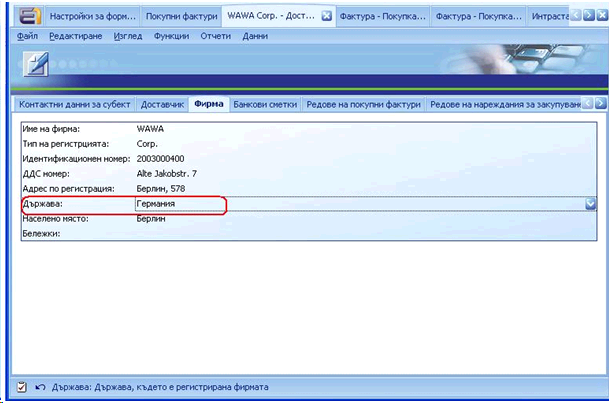
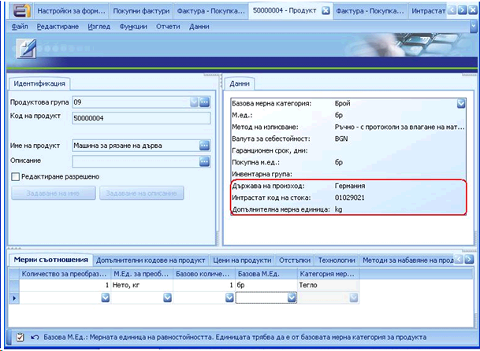
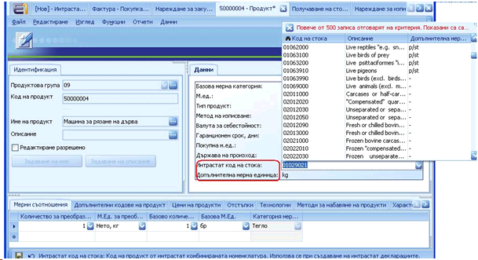
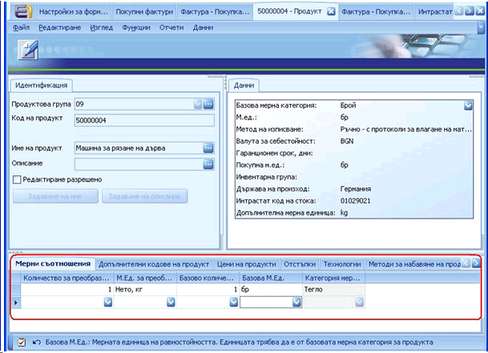
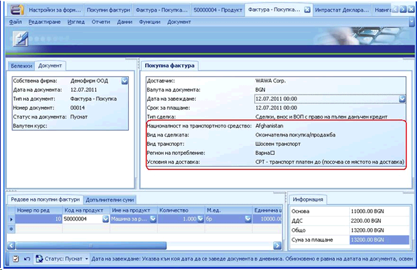
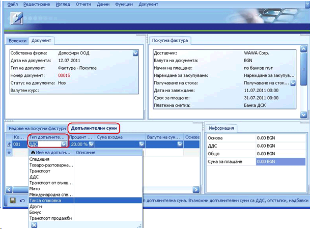
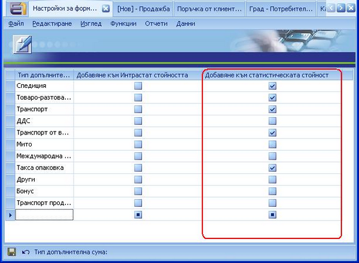

Попълване на документи за Интрастат декларации в посока Пристигане
За да се генерира Интрастат декларация за Пристигания, е необходимо да бъдат попълнени задължителните за Интрастат полета в следните документи:
- Дефиниция за Доставчик
- Форма „Продукт”
- Документ „Покупна Фактура” (Главно меню >> Финанси >> Разходи >> Създаване на Фактура - Покупка)
Дефиниция Доставчик
В панел Фирма освен стандартните полета е необходимо да се попълни и поле „Държава” на доставчика.

Форма „Продукт”
В панел Данни за продукта освен стандартните полета, трябва да се попълнят и задължителните такива, които са пряко свързани с генерирането на Интрастат декларация. В панел Данни те са следните:
- Държава на произход
- Интрастат код на стоката (виж тема „Генериране на Интрастат кодове на стоки и Административен регион”)
- Допълнителна мерна единица

Ако избраният Интрастат код на стоката изисква допълнителна мерна единица, то тя трябва да се въведе в съответното поле. В противен случай, системата няма да позволи дефиницията на продукта да бъде записана.

Ако продукта ни е в мерна категория, различна от „Тегло”, трябва да се попълнят мерните съотношения между различните мерни единици в полетата, намиращи се в панел „Мерни съотношения”:

Документ „Покупна Фактура”
Главно меню >> Финанси >> Разходи >> Създаване на Фактура - Покупка
При осъществяване на покупка, която ще бъде отчетена в Интрастат декларацията, в панел Покупна Фактура е необходимо да се покажат полетата, които са свързани с отчитането по Интрастат, тъй като те не са добавени в стандартния изглед в документ „Фактура –Покупка”. Задължителните полета за Интрастат декларацията са:
- Вид транспорт
- Вид на сделката
- Регион на потребление – ако това поле не е попълнено, при генериране на Интрастат Декларацията автоматично ще се вземе стойността на поле „Административен регион” от дефиницията на собствената фирма.
- Националност на транспортното средство
- Условия на доставка

В панел Допълнителни суми има възможност да се добавят допълнителните разходи, които трябва да влязат в статистическата стойност в Интрастат Декларацията:

Допълнителните суми, могат да бъдат добавяни и махани от документ Настройки за форматиране на Интрастат Декларация:
Главно меню >> Финанси >> Интрастат >> Настройки за форматиране на Интрастат Декларация
